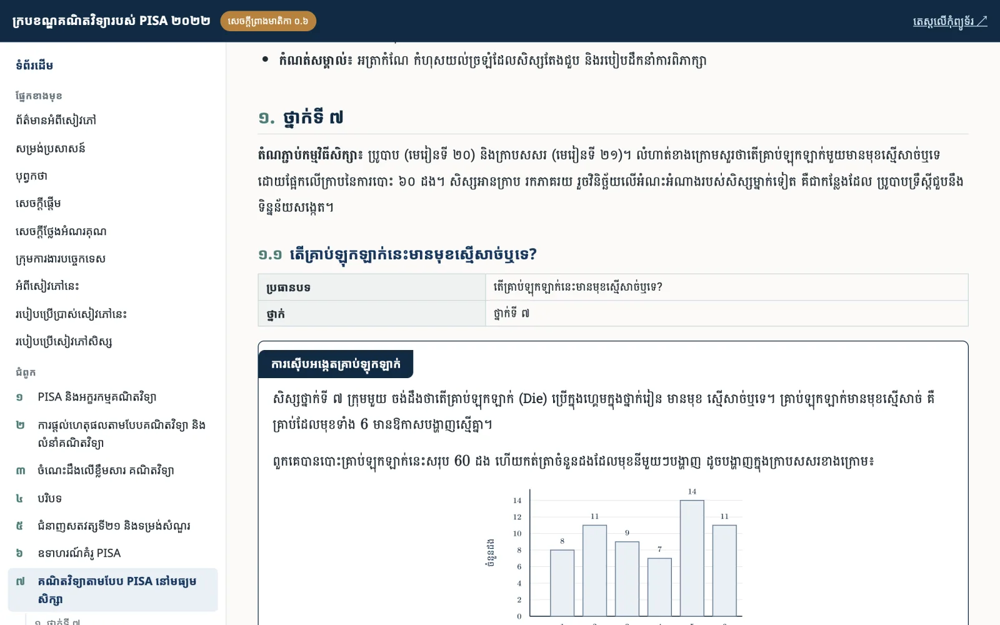

pisa.khmermath.org
សៀវភៅ ក្របខណ្ឌគណិតវិទ្យារបស់ PISA ២០២២
ពន្យល់អក្ខរកម្មគណិតវិទ្យា ការផ្តល់ហេតុផល ខ្លឹមសារ និងបរិបទរបស់ PISA ជាមួយឧទាហរណ៍គំរូ និងតេស្តគំរូសម្រាប់ថ្នាក់ទី ៧ ដល់ទី ៩។
- ៩ ជំពូក និង ៤ ឧបសម្ព័ន្ធ អានលើទូរស័ព្ទបាន
- ឧទាហរណ៍គំរូ PISA ពន្យល់ជាភាសាខ្មែរ
- ចម្លើយ និងអត្រាកំណែ សម្រាប់គ្រូ